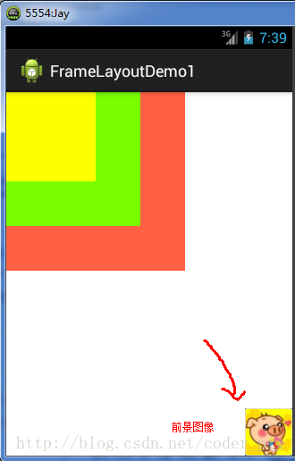

本節のイントロダクション
FrameLayout(フレームレイアウト)は、六大レイアウトの中でも最もシンプルなレイアウトと言えます。このレイアウトは画面上に直接空白の領域を確保し、コントロールを追加すると、デフォルトでこの領域の左上隅に配置されます。また、このレイアウト方式には位置決めの方法がないため、使用されるシーンはそれほど多くありません。フレームレイアウトのサイズは、コントロール内の最大の子コントロールによって決まります。コントロールのサイズがすべて同じ場合は、同時に一番上のコンポーネントしか見えません。後から追加したコントロールは前のコントロールを覆います。デフォルトではコントロールは左上隅に配置されますが、layout_gravity属性を使用して他の位置に指定することもできます。この節では、最も簡単な例を紹介するだけでなく、面白い例を2つ紹介します。興味があれば見てみてください。
1.よく使う属性
FrameLayoutの属性は2つだけですが、その前に1つ紹介しておきたいものがあります。
前景画像:常にフレームレイアウトの最上部にあり、ユーザーに直接向き合う画像、つまり覆われることのない画像のことです。
2つの属性:
- android:foreground:*このフレームレイアウトコンテナの前景画像を設定します
- android:foregroundGravity:前景画像の表示位置を設定します
2.実例デモ
1)最も簡単な例
実行結果図：

実装コードは以下の通りです：
<FrameLayout xmlns:android="http://schemas.android.com/apk/res/android"
xmlns:tools="http://schemas.android.com/tools"
android:id="@+id/FrameLayout1"
android:layout_width="match_parent"
android:layout_height="match_parent"
tools:context=".MainActivity"
android:foreground="@drawable/logo"
android:foregroundGravity="right|bottom">
<TextView
android:layout_width="200dp"
android:layout_height="200dp"
android:background="#FF6143" />
<TextView
android:layout_width="150dp"
android:layout_height="150dp"
android:background="#007FFE" />
<TextView
android:layout_width="100dp"
android:layout_height="100dp"
android:background="#FFFF00" />
</FrameLayout>
コード解説：非常に簡単です。3つのTextViewに異なるサイズと背景色を設定し、順に重ねます。右下にあるのは前景画像で、android:foreground="@drawable/logo" で前景画像の画像を設定し、android:foregroundGravity="right|bottom" で前景画像の位置を右下に設定しています。
2)指に沿って動く萌え少女
結果図は以下の通りです：

実装フローの解説：
- ステップ1:まずmain.xmlレイアウトを空のFrameLayoutに設定し、画像の背景を設定します。
- ステップ2:Viewクラスを継承したMeziViewカスタムコンポーネントクラスを新規作成し、コンストラクタでviewの初期座標を初期化します。
- ステップ3:onDraw()メソッドをオーバーライドし、空のペンクラスPaintをインスタンス化します。
- ステップ4:BitmapFactory.decodeResource()を呼び出してビットマップオブジェクトを生成します。
- ステップ5:canvas.drawBitmap()を呼び出して萌え少女のビットマップオブジェクトを描画します。
- ステップ6:画像がリサイクルされているかどうかを確認し、されていなければ強制的に画像をリサイクルします。
- ステップ7:メインのJavaコードでフレームレイアウトオブジェクトを取得し、MeziViewクラスをインスタンス化します。
- ステップ8:インスタンス化したmeziオブジェクトにタッチイベントのリスナーを追加し、onTouchメソッドをオーバーライドしてmeziのX,Y座標を変更し、invalidate()再描画メソッドを呼び出します。
- ステップ9:meziオブジェクトをフレームレイアウトに追加します。
レイアウトコード：main_activity.xml
<FrameLayout xmlns:android="http://schemas.android.com/apk/res/android"
xmlns:tools="http://schemas.android.com/tools"
android:id="@+id/mylayout"
android:layout_width="match_parent"
android:layout_height="match_parent"
tools:context=".MainActivity"
android:background="@drawable/back" >
</FrameLayout>
カスタム定義のMeziView.java
package com.jay.example.framelayoutdemo2;
import android.content.Context;
import android.graphics.Bitmap;
import android.graphics.BitmapFactory;
import android.graphics.Canvas;
import android.graphics.Paint;
import android.view.View;
public class MeziView extends View {
//定义相关变量,依次是妹子显示位置的X,Y坐标
public float bitmapX;
public float bitmapY;
public MeziView(Context context) {
super(context);
//设置妹子的起始坐标
bitmapX = 0;
bitmapY = 200;
}
//重写View类的onDraw()方法
@Override
protected void onDraw(Canvas canvas) {
super.onDraw(canvas);
//创建,并且实例化Paint的对象
Paint paint = new Paint();
//根据图片生成位图对象
Bitmap bitmap = BitmapFactory.decodeResource(this.getResources(), R.drawable.s_jump);
//绘制萌妹子
canvas.drawBitmap(bitmap, bitmapX, bitmapY,paint);
//判断图片是否回收,木有回收的话强制收回图片
if(bitmap.isRecycled())
{
bitmap.recycle();
}
}
}
MainActivity.java:
package com.jay.example.framelayoutdemo2;
import android.os.Bundle;
import android.view.MotionEvent;
import android.view.View;
import android.view.View.OnTouchListener;
import android.widget.FrameLayout;
import android.app.Activity;
public class MainActivity extends Activity {
@Override
protected void onCreate(Bundle savedInstanceState) {
super.onCreate(savedInstanceState);
setContentView(R.layout.activity_main);
FrameLayout frame = (FrameLayout) findViewById(R.id.mylayout);
final MeziView mezi = new MeziView(MainActivity.this);
//为我们的萌妹子添加触摸事件监听器
mezi.setOnTouchListener(new OnTouchListener() {
@Override
public boolean onTouch(View view, MotionEvent event) {
//设置妹子显示的位置
mezi.bitmapX = event.getX() - 150;
mezi.bitmapY = event.getY() - 150;
//调用重绘方法
mezi.invalidate();
return true;
}
});
frame.addView(mezi);
}
}
コードの説明：手順の通りで、とても簡単です。カスタムViewクラスを定義して再描画メソッドをオーバーライドし、Activityでそれにタッチイベントを追加します。タッチイベント内でonTouchメソッドをオーバーライドしてクリック位置を取得します。さらに-150が必要です。そうしないと、その座標はカスタムViewの左上隅になってしまうからです。その後、invalidate()再描画メソッドを呼び出し、最後にフレームレイアウトに追加するだけです。
コードのダウンロード：FrameLayoutDemo2.zip
3)走り回る萌え少女
結果図は以下の通りです：

実装フロー：
- ステップ1:空のFrameLayoutレイアウトを定義し、前景画像の位置を中央に設定します。
- ステップ2:ActivityでそのFrameLayoutレイアウトを取得し、Handlerオブジェクトを新規作成して、handlerMessage()メソッドをオーバーライドし、画像を更新するメソッドを呼び出します。
- ステップ3:move()メソッドを自作し、switchで前景画像に表示するビットマップを動的に設定します。
- ステップ4:onCreate()メソッド内でタイマーオブジェクトTimerを新規作成し、runメソッドをオーバーライドして、170ミリ秒ごとにhandlerに空のメッセージを送信します。
実装コードは以下の通りです：
レイアウトファイル:main_activity.xml:
<FrameLayout xmlns:android="http://schemas.android.com/apk/res/android"
xmlns:tools="http://schemas.android.com/tools"
android:id="@+id/myframe"
android:layout_width="wrap_content"
android:layout_height="wrap_content"
android:foregroundGravity="center">
</FrameLayout>
MainActivity.java:
package com.jay.example.framelayoutdemo3;
import java.util.Timer;
import java.util.TimerTask;
import android.os.Bundle;
import android.os.Handler;
import android.os.Message;
import android.view.View;
import android.view.View.OnClickListener;
import android.widget.FrameLayout;
import android.app.Activity;
import android.graphics.drawable.Drawable;
public class MainActivity extends Activity {
//初始化变量,帧布局
FrameLayout frame = null;
//自定义一个用于定时更新UI界面的handler类对象
Handler handler = new Handler()
{
int i = 0;
@Override
public void handleMessage(Message msg) {
//判断信息是否为本应用发出的
if(msg.what == 0x123)
{
i++;
move(i % 8 );
}
super.handleMessage(msg);
}
};
//定义走路时切换图片的方法
void move(int i)
{
Drawable a = getResources().getDrawable(R.drawable.s_1);
Drawable b = getResources().getDrawable(R.drawable.s_2);
Drawable c = getResources().getDrawable(R.drawable.s_3);
Drawable d = getResources().getDrawable(R.drawable.s_4);
Drawable e = getResources().getDrawable(R.drawable.s_5);
Drawable f = getResources().getDrawable(R.drawable.s_6);
Drawable g = getResources().getDrawable(R.drawable.s_7);
Drawable h = getResources().getDrawable(R.drawable.s_8);
//通过setForeground来设置前景图像
switch(i)
{
case 0:
frame.setForeground(a);
break;
case 1:
frame.setForeground(b);
break;
case 2:
frame.setForeground(c);
break;
case 3:
frame.setForeground(d);
break;
case 4:
frame.setForeground(e);
break;
case 5:
frame.setForeground(f);
break;
case 6:
frame.setForeground(g);
break;
case 7:
frame.setForeground(h);
break;
}
}
@Override
protected void onCreate(Bundle savedInstanceState) {
super.onCreate(savedInstanceState);
setContentView(R.layout.activity_main);
frame = (FrameLayout) findViewById(R.id.myframe);
//定义一个定时器对象,定时发送信息给handler
new Timer().schedule(new TimerTask() {
@Override
public void run() {
//发送一条空信息来通知系统改变前景图片
handler.sendEmptyMessage(0x123);
}
}, 0,170);
}
}
コード解説：コードも非常に簡単です。handlerオブジェクトを定義してフレームレイアウトの前景画像を更新し、Timerタイマーを定義して170ミリ秒ごとにタイマーメッセージを送信します。i++;move(i%8);これは8枚の画像をアニメーション素材として使用しているためです。
コードのダウンロード：FrameLayoutDemo3.zip
本節のまとめ
この節ではFrameLayout(フレームレイアウト)について紹介しました。主にforegroundとforegroundGravity属性の使い方を覚えれば十分です。フレームレイアウトは前のテーブルレイアウトより少し多く使われます。興味があれば、筆者のように小さな例を書いて試してみてください。